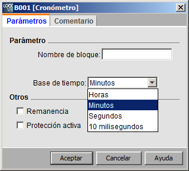
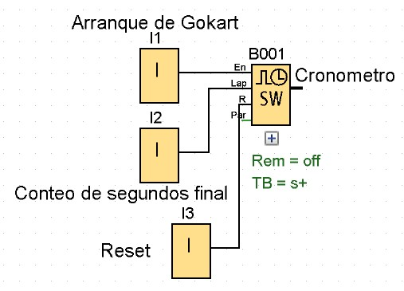
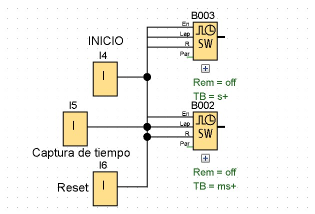

CRONÓMETRO
Descripción Breve
El cronómetro registra el tiempo transcurrido desde que fue activado.
| Conexión | Descripción |
|---|---|
| Entrada En | En (Enable) es la entrada de vigilancia. LOGO! pone a 0 el tiempo transcurrido actualmente y comienza a contabilizar el tiempo transcurrido tan pronto En pasa de 0 a 1. Cuando En pasa de 1 a 0, el tiempo transcurrido se congela. |
| Entrada lap | Un flanco ascendente (cambio de 0 a 1) en la entrada Lap detiene el cronómetro y aplica en la salida el tiempo de pausa. Un flanco descendente (cambio de 1 a 0) en la entrada Lap reanuda el cronómetro y aplica en la salida el tiempo transcurrido actualmente. |
| Entrada R | Una señal en la entrada R (Reset) borra el tiempo transcurrido actualmente y el tiempo de pausa. |
| Parámetro | Base para el tiempo transcurrido, se pueden ajustar horas, minutos, segundos o centésimas de segundo. |
| Salida AQ | La salida AQ emite el valor del tiempo transcurrido actualmente cuando se registra un flanco descendente (cambio de 1 a 0) en la entrada Lap y emite el valor del tiempo de pausa cuando se registra un flanco ascendente (cambio de 0 a 1) en la entrada Lap. Un flanco ascendente (cambio de 0 a 1) pone a 0 el valor de la salida AQ. |
Parámetros de la base de tiempo
Se puede configurar una base de tiempo para la salida analógica:

La base para el tiempo transcurrido se puede ajustar en horas, minutos, segundos o centésimas de segundo (unidades de 10 milisegundos). La base de tiempo más pequeña y, por consiguiente, la resolución, es de 10 milisegundos o bien 1 centésima de segundo.
Cronograma

Descripción de la función
Cuando En = 1, el tiempo actual se incrementa.
Cuando En = 0, la contabilización del tiempo actual se detiene.
Cuando En = 1 y Lap = 0, la salida AQ emite el valor del tiempo transcurrido actualmente.
Cuando En = 1 y Lap = 1, el tiempo actual sigue incrementándose, pero la salida AQ emite el valor del tiempo de pausa.
Cuando En = 0 y Lap = 1, la salida AQ emite el valor del tiempo de pausa.
Cuando En = 0 y Lap = 0, la salida AQ emite el valor del tiempo actual más reciente.
Cuando R = 1, tanto el tiempo actual como el tiempo de pausa se resetean.
EJERCICIOS
EJERCICIO 1
- Se tiene un cronometro adaptado a un laser que cuenta en segundos, utilizado una pista de prueba de gokart este laser detecta cuando un objeto pasa por el y capta el segundo en que paso, esto es para contabilizar los tiempos y saber si el motor alcanza el tiempo potencia requerida.
- Cuenta con un boton que reinicia el conteo que lleve.
EJERCICIO 2
- Un cronometro contabiliza los segundos de tiempos de atletas, un botón se presiona continuamente hasta llegar a la meta y se para el tiempo, otro botón imprime el resultado antes que se reinicie y también cuenta con un botón externo para resetear el tiempo y el conteo captado.
- Este sistema toma el tiempo en segundos y milésimas de segundo.
SOLUCIÓN DE LOS EJERCICIOS
Cronómetro

Solución del ejercicio 1
Solución del ejercicio 2